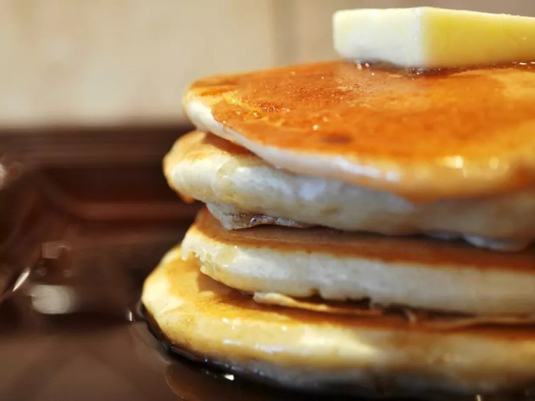

Fluffy Pancakes

Description
The secret to the fluffiest pancakes? Air!
The combination of homemade buttermilk (milk and vinegar) and two leaveners (baking powder and baking soda) create lots of air bubbles in the pancake batter, resulting in the lightest and fluffiest pancakes imaginable.
Ingredients
- ¾ cup milk
- 2 tablespoons white vinegar
- 1 cup all-purpose flour
- 2 tablespoons white sugar
- 1 teaspoon baking powder
- ½ teaspoon baking soda
- ½ teaspoon salt
- 1 egg
- 2 tablespoons butter, melted
- cooking spray
Steps
- Make the sour milk: Combine ¾ cup milk and 2 tablespoons white vinegar in a medium bowl. Let it sit for 5 minutes.
- Mix the dry ingredients: In a large mixing bowl, whisk together 1 cup all-purpose flour, 2 tablespoons white sugar, 1 teaspoon baking powder, ½ teaspoon baking soda, and ½ teaspoon salt.
- Combine wet ingredients: In a separate bowl, whisk together 1 egg and 2 tablespoons melted butter. Then, stir this wet mixture into the soured milk.
- Combine wet and dry ingredients: Gradually pour the wet ingredients into the dry ingredients, whisking constantly until you have a smooth batter with no lumps.
- Cook the pancakes: Heat a large skillet over medium heat and coat it with cooking spray. Pour ¼ cupfuls of batter onto the skillet, leaving space between them.
- Flip and finish: Cook until bubbles form on the surface and the edges begin to dry, about 2-3 minutes. Flip the pancakes with a spatula and cook until golden brown on the other side. Repeat with the remaining batter.